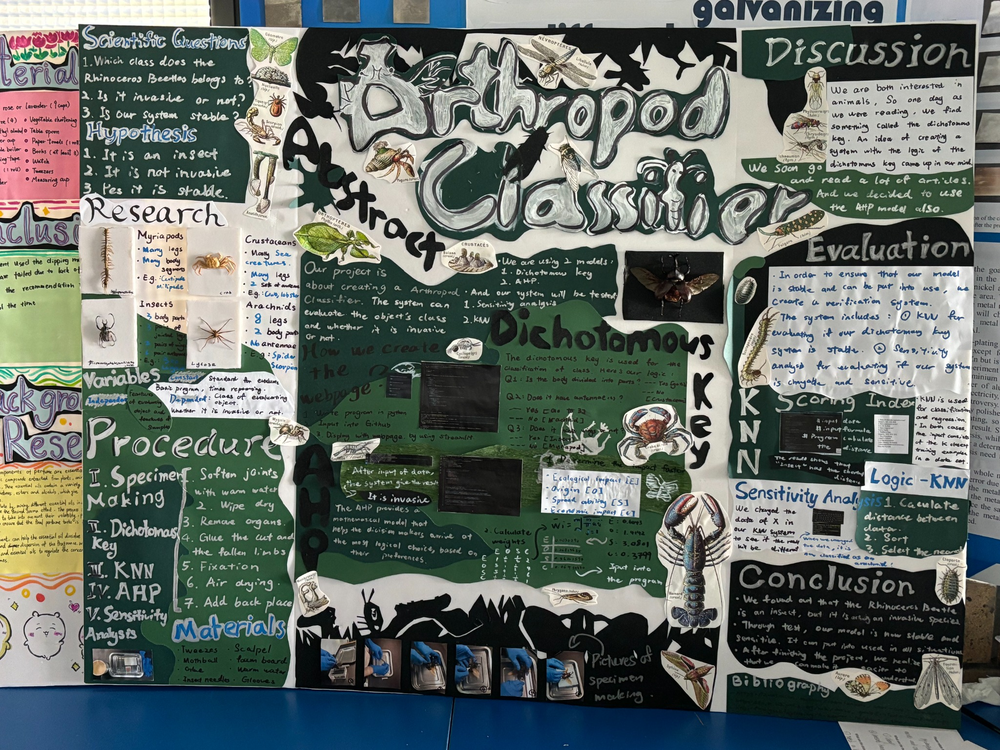

Scoring indices
PPT · 12Adjust the coded scores to compare a sample.
Scoring key
Antennae: 2.5 follows the PPT table and code. Its text key lists 1.5. The README records this difference.
SEVEN INDICES · FOUR REFERENCES
Adjust the coded scores to compare a sample.
Antennae: 2.5 follows the PPT table and code. Its text key lists 1.5. The README records this difference.
d(x, p) = √Σ(xᵢ − pᵢ)². The nearest of the four reference profiles supplies the group label. The seven index scores are separate coordinates; their sum is not used.
OBSERVABLE TRAITS
A simplified guide for adult specimens with visible traits.
FOUR CRITERIA · WEIGHTED SCORES
Starting ratios are derived from the supplied weights.
Illustrative inputs from the supplied script; these scores do not establish invasiveness.
ONE INDEX AT A TIME
Other six scores stay fixed. Hover over marked points for exact distances.
The sweep measures local prediction changes, not classification accuracy.
PROJECT MATERIALS
